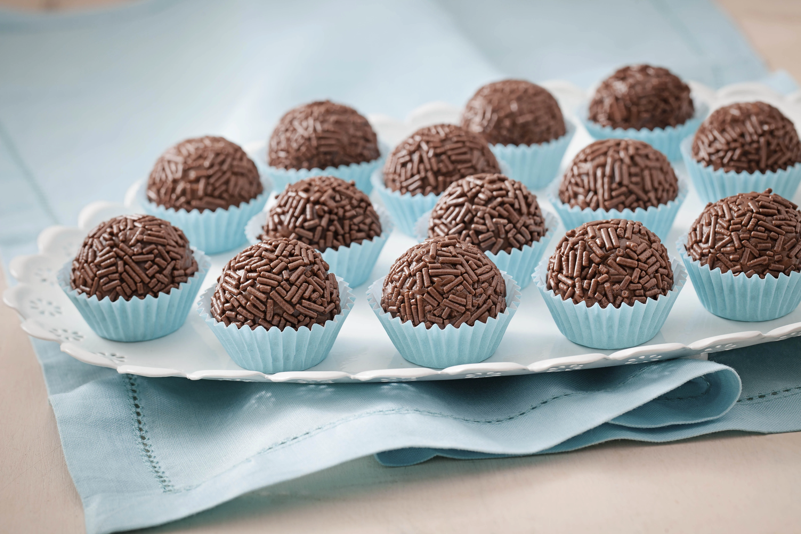

receita

ingredientes
- 1 lata de leite condensado
- 2 colheres de manteiga
- 4 colheres de nescau ou toddy
modo de preparo
- Junte esses ingredientes numa panela.
Adicione o achocolatado e a mateiga, e mexe até criar consistência
, ou seja, até começar a engrossar.
- Despeje tudo numa vasilha de vidro e leve a geladeira.
Espere aproximadamente uma hora e meia